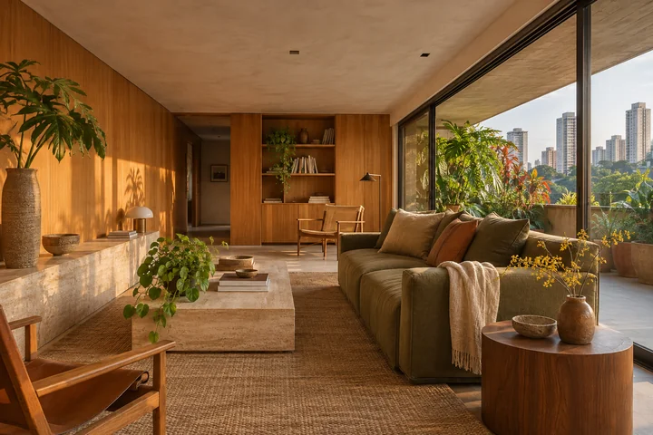
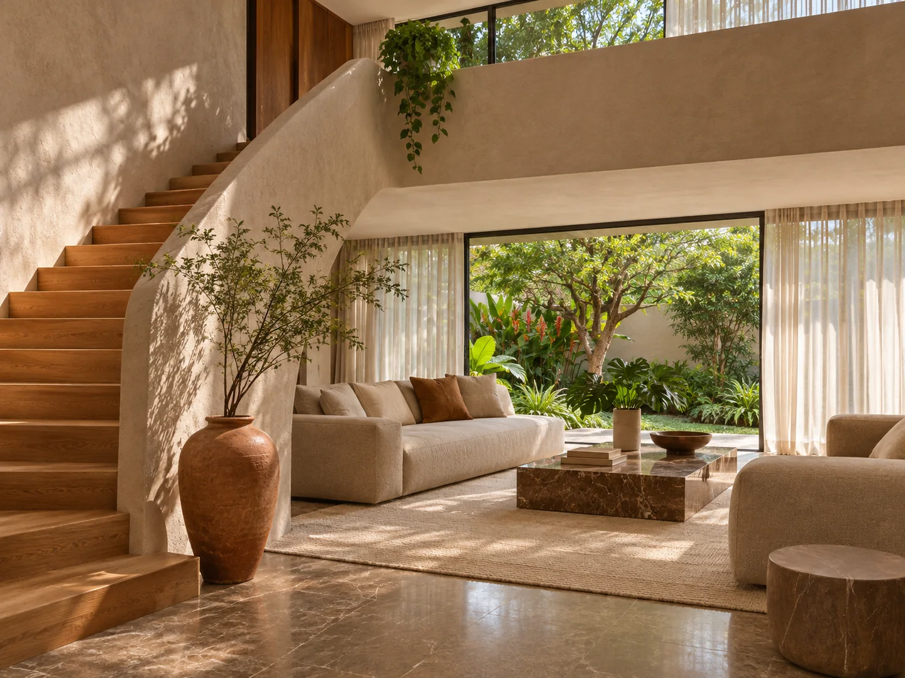

Interiores residenciais
Uma casa que acompanha a sua rotina.
O projeto começa pelo jeito de morar. Conte quem usa os ambientes, o que funciona hoje e o que precisa mudar.
Descrever meus ambientes
Estudo de interiores
A sala como ponto de encontro.
Neste estudo, a sala e a varanda passam a funcionar como um só percurso. O móvel baixo guarda o que se usa todo dia sem fechar a vista para o jardim.
- Chegar e guardarUm lugar para chaves, bolsas e sapatos logo na entrada.
- Receber sem rearrumarMóveis que deixam livre o caminho entre a mesa e a varanda.
- Escolher o que ficaPeças existentes entram na planta antes de pensar em novas compras.

Da rotina ao desenho.
- Mapear os ambientes
Quem usa cada espaço, o que precisa guardar e quais atividades convivem no mesmo lugar.
- Testar a planta
Comparar posições de móveis e caminhos antes de escolher revestimentos.
- Detalhar as decisões
Organizar materiais, iluminação e marcenaria para conversar com fornecedores.
Antes da primeira conversa
Preciso ter uma planta?
Ajuda a começar, mas você pode indicar que ainda está levantando as medidas.
Posso projetar só um ambiente?
Pode indicar o ambiente e selecionar a faixa de área. A conversa inicial ajuda a delimitar o escopo.
O briefing já informa um preço?
Ele reúne o ponto de partida. Em um projeto real, o estúdio confirma o escopo antes de preparar a proposta.
O que a casa precisa fazer melhor?
Comece pelo ambiente que motivou sua busca e pela etapa em que você está.
Montar um briefing
Escolha o tipo de projeto, a área aproximada e o que você já tem em mãos.
Seu briefing de exemplo
- Protocolo de teste
- Projeto
- Área aproximada
- Etapa
Em um atendimento real, o estúdio confirmaria o escopo e combinaria uma conversa antes de preparar a proposta.